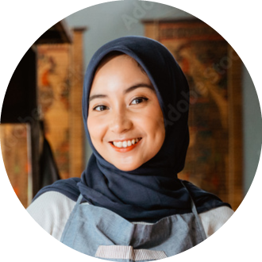
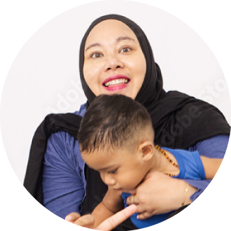
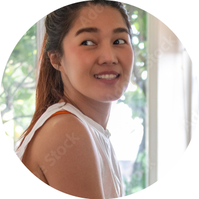

Lonny
Jadi sangat paham dengan tekniknya. Privasinya terjaga banget. Coach-nya super sabar.
Pilates studio Bogor
Eksklusif di jantung kota Bogor. Rasakan pengalaman pilates privat yang menggabungkan presisi gerakan dengan ketenangan batin yang hakiki.
Daftar Sesi TrialThe Serenity Experience
Kami menyapa setiap member sebagai “Angels”. Di sini, transformasi bukan sekadar fisik, melainkan harmoni antara kontrol tubuh dan fokus pikiran.
Sabtu, 29 August 2026 (07.00 - 19.00 WIB)
W-Clugra Racha Laras Bogor, Kec. Bogor Utara, Kota Bogor.


Winda brings a thoughtful, encouraging approach to every class—so you can build strength, stability, and a better relationship with your body.
Meet Winda →
Jadi sangat paham dengan tekniknya. Privasinya terjaga banget. Coach-nya super sabar.
Badan kerasa jauh lebih fungsional setelah rutin latihan di sini. Alatnya masih baru dan bersih.

Bener-bener sanctuary buat ibu rumah tangga kayak aku. Abis latihan bisa langsung relaksasi.

Sesi yang personal dan terarah. Aku jadi lebih percaya diri dengan tubuhku sendiri.